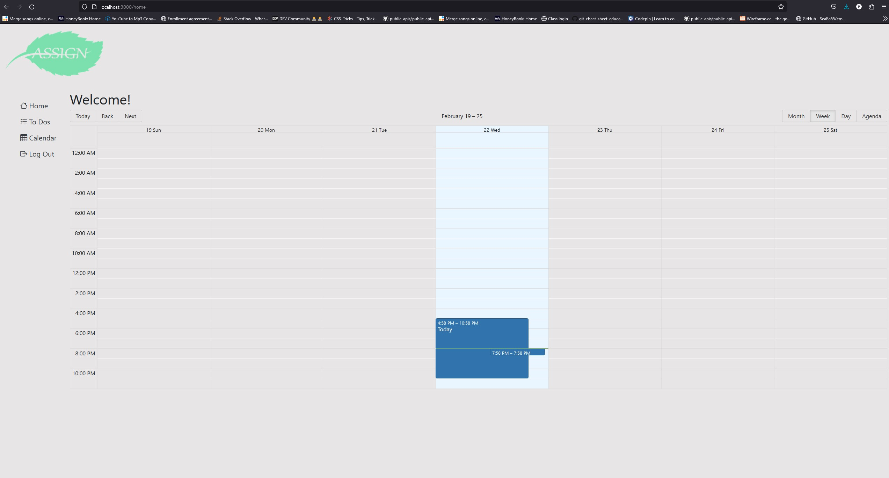
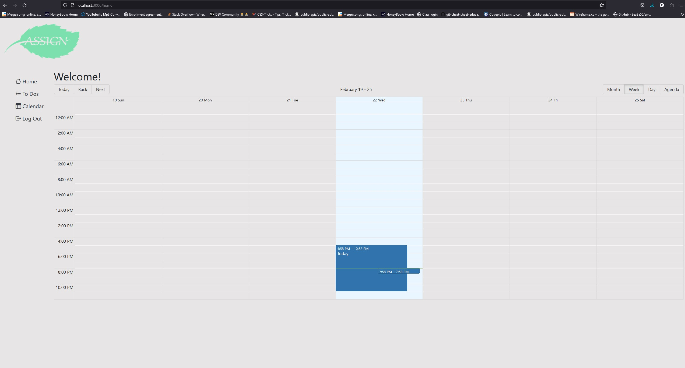

About Me
I am currently working through the class work for my boot camp again on my own time. I passed the UW full stack development boot camp but I wanted the time to work through it again to get a better understanding of the course work. I am excited to get into a job that allows me to be a developer.
Previous Work
The following three images are of three projects that I worked on in the bootcamp that I was in. The first one is a site that uses an API that allows users to look up books or have one suggested to them from the New York best times seller list. The second site is a site that allows users to interact with each other with the main interest being mushrooms that are found in the wild. The third one is a calander site that allows users to schedule events. Clicking on an image of the project will take you to the github repository.

 

Contact Info
- Email: schrolan000@gmail.com
- Phone Number: (262) 744-7836